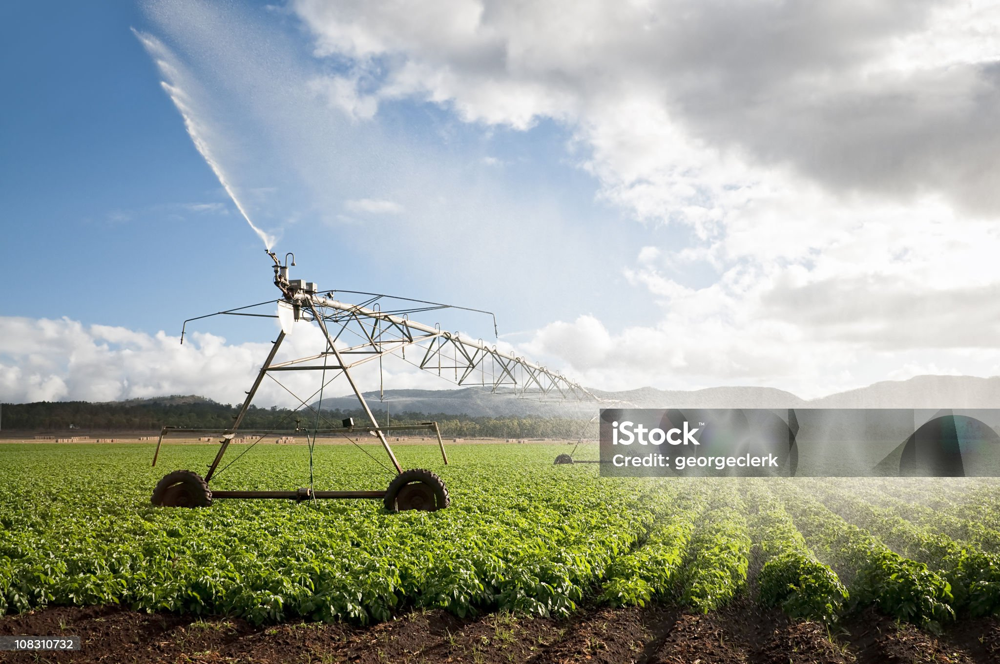

Our Mission
AgriTech is dedicated to transforming traditional farming through innovative technology solutions. We leverage AI, ML, IoT devices, and cloud computing to empower farmers and revolutionize agricultural practices.
Our Vision
To create a sustainable and profitable agricultural ecosystem where farmers have access to cutting-edge technology, fair market prices, and comprehensive support systems.
Key Solutions
- Smart Farming Guidance
- AI-Powered Crop Monitoring
- Real-time Weather Alerts
- Market Price Analysis
- Direct Buyer Connection

10,000+
Farmers Empowered
500+
Villages Covered
30%
Yield Improvement